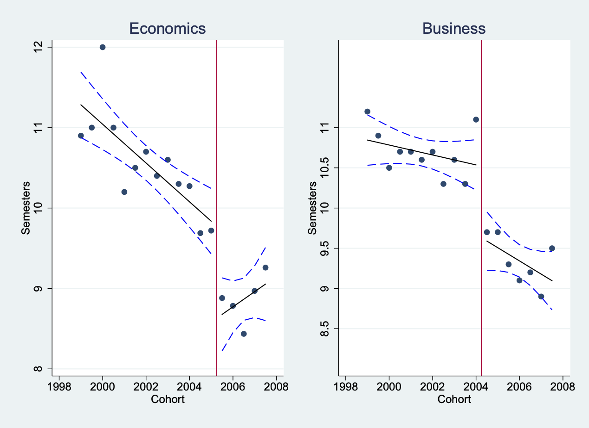

X causes Y if…X
without changing anything else…Y would also change as a resultExamples of causal relationships!
Some obvious:
Some less obvious:
Examples of non-zero correlations that are not causal (or may be causal in the wrong direction!)
Some obvious:
Some less obvious:
X causes
YX, then Y would
change as a resultX is either 1 or 0,
like “got a medical treatment” or “didn’t” – Think of treatment and
control groupX?Y is when we make X=0, and then check
what Emilia’s Y is again when we make
X=1.Ys different? If so, X
causes Y!X on Y isX=0 and with X=1. She either got
that medical treatment or she didn’t.X=1 and, let’s say,
Y=10.Y would have been if we
made X=0, is missing. We don’t know what it is!
Could also be Y=10. Could be Y=9. Could be
Y=1000!X=0 and compare their Y?Y could be
different BESIDES X.X=0 and they have
Y=9, is that because X increases
Y, or is that just because Emilia and Claudia would have
had different Ys anyway?Y would
have been if X had been differentX=0 and one has X=1X=0
instead of X=1X, then you know
that the people with X=0 are, on average, the same as the
people with X=1X causes Y to
increase by 1df <- data.frame(Y.without.X = rnorm(10000),X=sample(c(0,1),10000,replace=T)) %>%
mutate(Y.with.X = Y.without.X + 1) %>%
#Now assign who actually gets X
mutate(Observed.Y = ifelse(X==1,Y.with.X,Y.without.X))
#And see what effect our experiment suggests X has on Y
df %>% group_by(X) %>% summarize(Y = mean(Observed.Y))## # A tibble: 2 × 2
## X Y
## <dbl> <dbl>
## 1 0 0.00679
## 2 1 0.991df <- data.frame(Z = runif(10000)) %>% mutate(Y.without.X = rnorm(10000) + Z, Y.with.X = Y.without.X + 1) %>%
#Now assign who actually gets X
mutate(X = Z > .7,Observed.Y = ifelse(X==1,Y.with.X,Y.without.X))
df %>% group_by(X) %>% summarize(Y = mean(Observed.Y))## # A tibble: 2 × 2
## X Y
## <lgl> <dbl>
## 1 FALSE 0.342
## 2 TRUE 1.85#But if we properly model the process and compare apples to apples...
df %>% filter(abs(Z-.7)<.01) %>% group_by(X) %>% summarize(Y = mean(Observed.Y))## # A tibble: 2 × 2
## X Y
## <lgl> <dbl>
## 1 FALSE 0.687
## 2 TRUE 1.96lm(Y~X) gives us the causal effect in
the randomized-X case. lm(Y~X) identifies
the effect of \(X\) on \(Y\)lm(Y~X) does not give us the causal effect
in the non-randomized case we did. In that case, lm(Y~X)
does not identify the causal effect, but the
apples-to-apples comparison we did does identify the
effectX, and how
Y would change as a result.Why might opera and lifespan be related?
# Observational sample
tb_obs <- tibble(epsilon = rnorm(200), W = rnorm(200), origin = 'Observational') %>%
mutate(X = W + rnorm(200) > 0) %>% mutate(Y = 3*X - 2*W + epsilon)
# Experimental sample
tb_exp <- tibble(epsilon = rnorm(200), W = rnorm(200), X = rnorm(200) > 0, origin = 'Experimental') %>%
mutate(Y = 3*X - 2*W + epsilon)
# Together!
tb <- bind_rows(tb_obs, tb_exp)create_data <- function() {
tb_obs <- tibble(epsilon = rnorm(200), W = rnorm(200), origin = 'Observational') %>%
mutate(X = W + rnorm(200) > 0) %>% mutate(Y = 3*X - 2*W + epsilon)
tb_exp <- tibble(epsilon = rnorm(200), W = rnorm(200), X = rnorm(200) > 0, origin = 'Experimental') %>%
mutate(Y = 3*X - 2*W + epsilon)
tb <- bind_rows(tb_obs, tb_exp)
return(tb)
}run_model <- function(x) {
m <- lm(Y~X, data = create_data())
return(coef(m)[2])
}
library(purrr)
1:1000 %>% map_dbl(run_model) %>% mean()## [1] 1.865277run_model_2 <- function(x) {
m <- lm(Y~X + W, data = create_data())
return(coef(m)[2])
}
1:1000 %>% map_dbl(run_model_2) %>% mean()## [1] 2.997931run_model_3 <- function(x) {
m <- lm(Y~X, data = create_data() %>% filter(origin == 'Experimental'))
return(coef(m)[2])
}
1:1000 %>% map_dbl(run_model_3) %>% mean()## [1] 2.97789


Discussion questions: